Kapittel 1
Sette opp en virtuell maskin.
Aller først må vi opprette serveren vi skal hoste nettsiden vår på. Naviger fram til ditt elevpool i menyen til venstre (i dette tilfellet elevpool 31), høyreklikk og velg "New virtual machine".
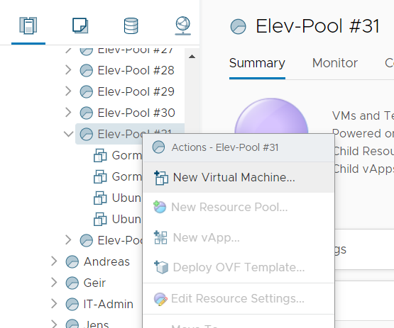I denne nye menyen vil det være 7 steg man må gjennom for å opprette en ny maskin. Det første steget er å velge hvordan man vil opprette maskinen, og ettersom vi oppretter den fra bunnen av, velger vi bare "Create a new virtual machine". Så må vi gi maskinen et navn, og et sted den skal lagres. Jeg har gitt den navnet "TutorialUbuntuMachine". Mappen som den lagres i lot jeg være slik den er.
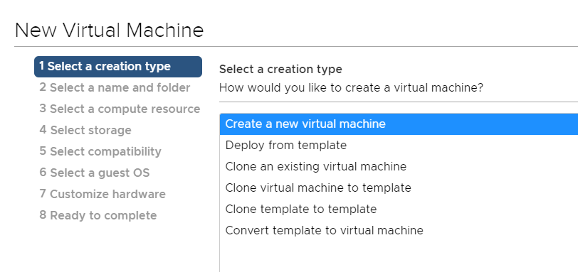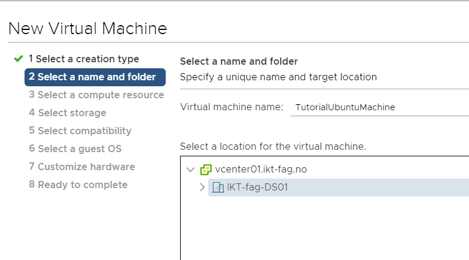Så må vi velge en "compute resource", og her ligger en liste over de forskjellige elevpool-nummerne. Velg ditt elevpool fra listen (i dette tilfellet 31), og trykk "next". På steg 4 velger vi stedet der vi skal lagre filene til den virtuelle maskinen. I vårt tilfelle velger vi "IKT-fag".
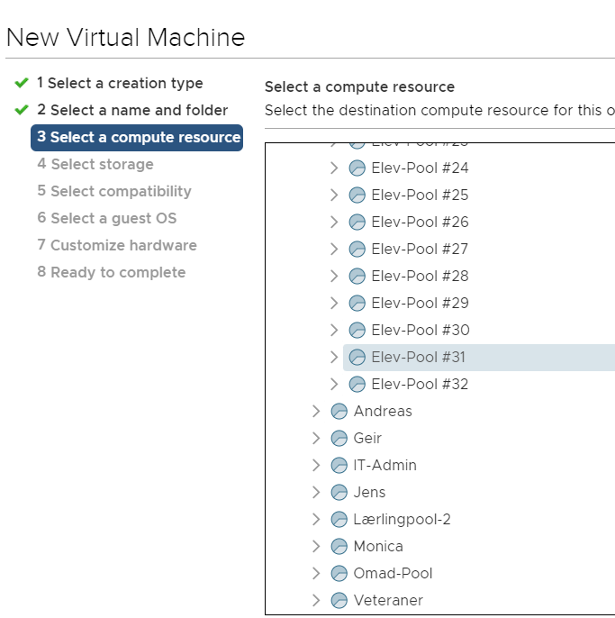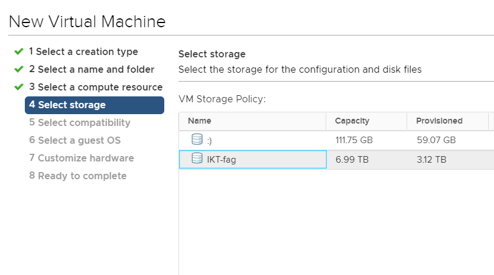På "Select compatibility" velger vi "ESXi 6.7 and later", som er standardinnstillingen. Etter dette skal man velge operativsystemet, og her må man først velge Linux i den øverste menyen, og så navigere fram til "Ubuntu Linux (64-bit)".
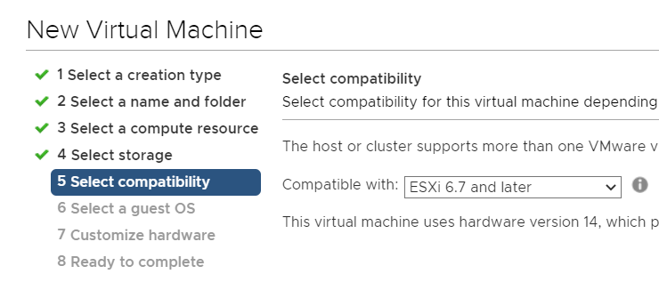
Etter å ha valgt operativsystem vil du komme til "Customize hardware", og her er det en del som må justeres. Aller først går vi til "New network", og velger "Browse" fra menyen markert i rødt. I menyen som da kommer opp, velger man sitt elevpool-nummer og trykker ok.
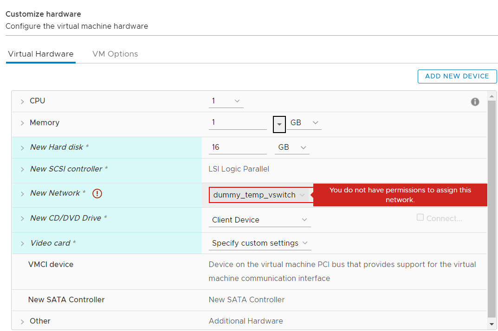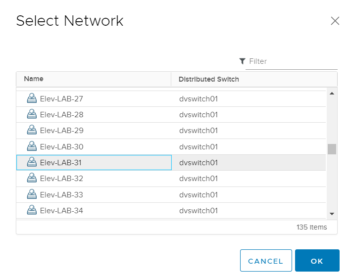Så går man til "New CD/DVD drive" og velger "Content library ISO file" fra listen. I listen som kommer opp vil det være mange forskjellige muligheter, men ettersom vi skal opprette en Ubuntu webserver velger vi "ubuntu-20.04.3-live-server" som ligger øverst. Når man har gjort det, pass på at du krysser av på "Connect at power on".
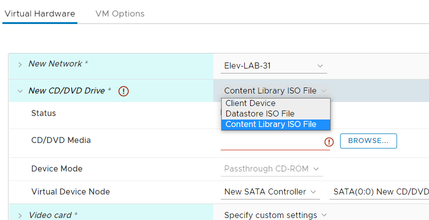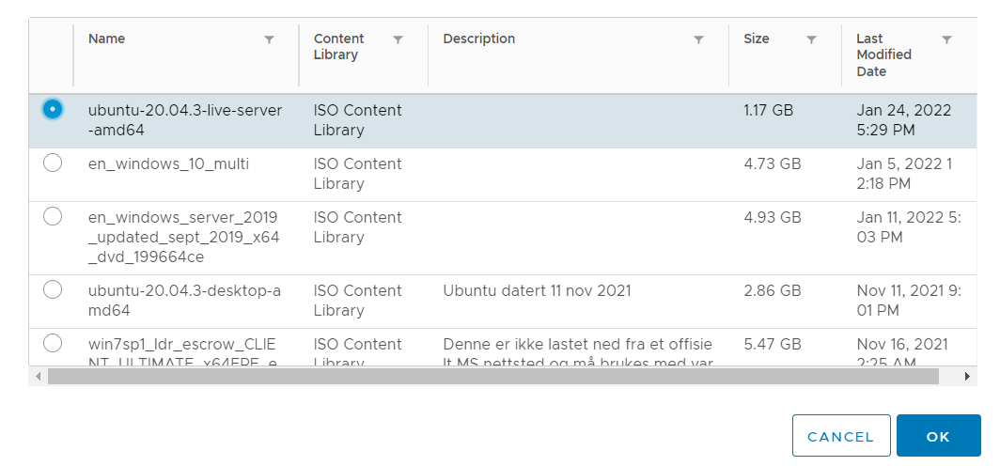Neste steg er i "New hard disk" menyen. I "Disk provisioning" menyen må vi velge "Thin provision". Dette vil hindre den virtuelle maskinen fra å bruke for mange ressurser.
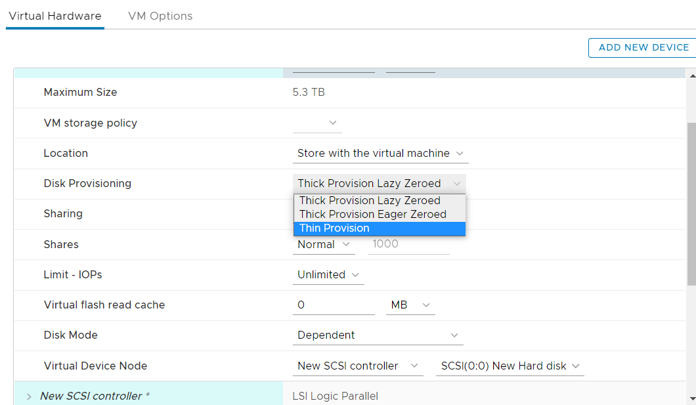Når du har fullført alle stegene over og trykket "Finish", så vil du kunne finne maskinen liggende under ditt elevpool.
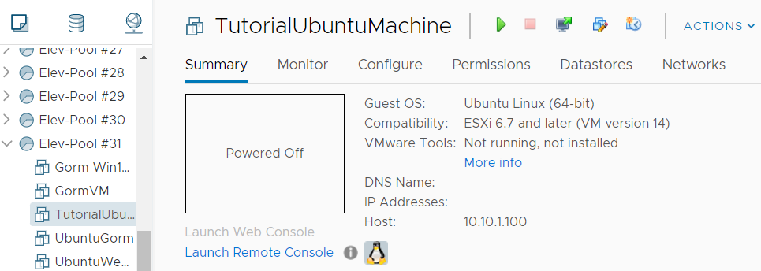Kapittel 2
Konfigurering av Ubuntu webserver
Før vi gjør noe annet må vi starte opp selve maskinen ved å trykke på den grønne pilen til høyre for navnet på maskinen. Man kan også høyreklikke på maskinen og gå til power - power on.
Nå som vi har started maskinen vil teksten "Launch web console" bli synlig. Trykk på den, og velg "Web console" i menyen som popper opp, og trykk ok.
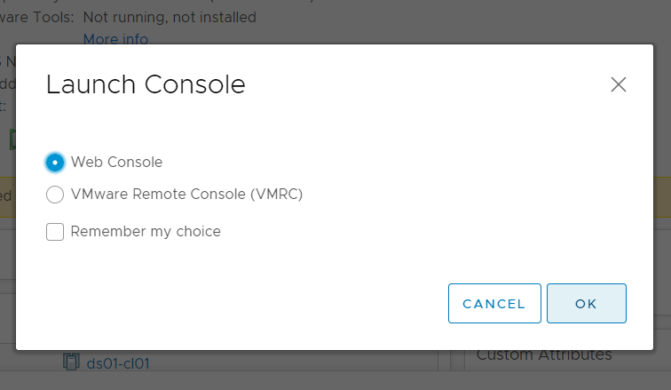Det aller første vi ser når vi har åpnet web konsollen er en meny som spør om å velge et språk. Her valgte jeg engelsk, men man kan velge norsk hvis man vil. Vær obs på at man kanskje må trykke på skjermen med musen for at den skal la deg gjøre noe.
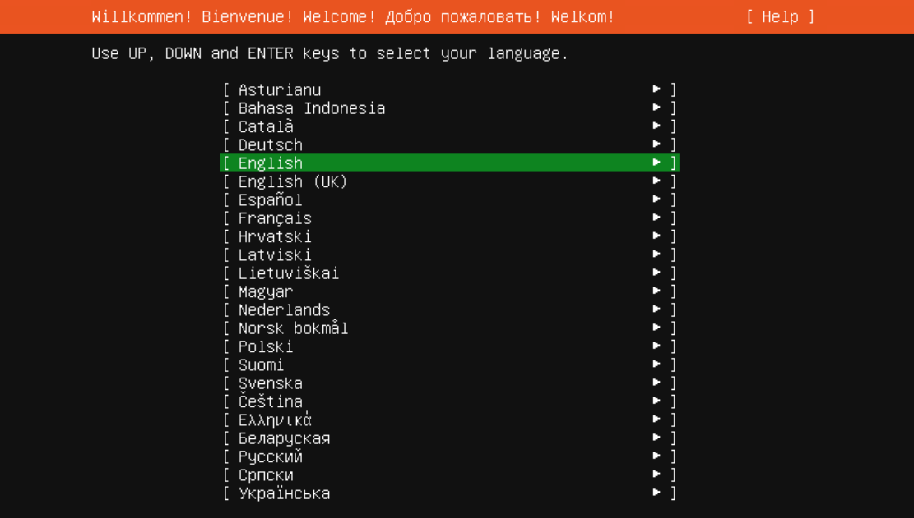Etter å ha valgt språk spør maskinen om språket til tastaturet. Her kan du enten velge manuelt fra listen, eller trykke på "Identify keyboard". Hvis du velger den vil maskinen spørre deg om å trykke på forskjellige knapper på tastaturet, helt til den finner ut hvilke knapper du har og ikke har.
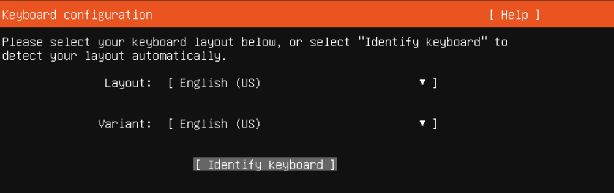Neste steg er å koble til internett. Start ved å velge der det står "ens160", og trykk enter for å få opp en liste. Velg "Edit IPv4" fra listen.
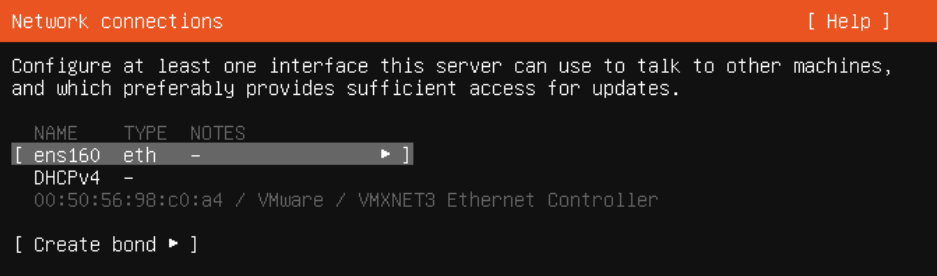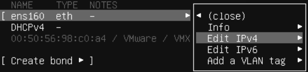Etter å ha valgt IPv4 vil man få dette popup-vinduet. Trykk enter på menyen og velg "manual", ettersom vi må manuelt koble til internett.
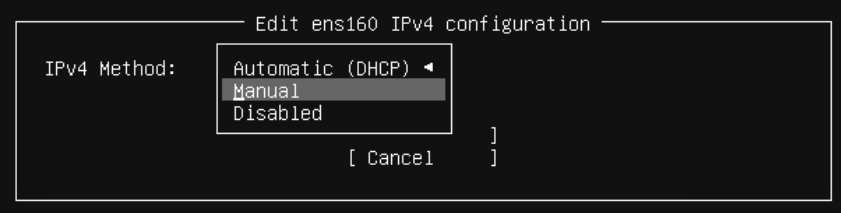I feltene som kommer opp skal man skrive inn IP addresse, Gateway, Subnett og DNS server. Search domains forblir tom.
Skriv følgende inn i feltene:
Subnet: 10.12.elevpoolnummer.0/24
Address: 10.12.elevpoolnummer.69
Gateway: 10.12.elevpoolnummer.1
Name servers: 10.10.1.30
Vær obs på at hvis du har flere webservere må du ha et annet tall i slutten av "Address".
Når du er ferdig med å skrive inn IP-ene, trykk på save, og så trykk på "done" for å gå videre.
Nå vil det være en del steg som vi skal hoppe over fordi vi ikke har bruk for dem. Den aller første av disse er når maskinen spør om du vil konfigurere proxy. Ikke skriv noe inn i feltet øverst, bare trykk på done.
Like etter spør maskinen om å konfigurere archive mirror. Dette trenger vi heller ikke gjøre noe med, så vi går bare videre.
Så vil maskinen spørre om du vil oppdatere. Man kan velge og oppdatere hvis man vil, men ettersom denne guiden ble laget uten å gjøre det kan det føre til uforventede problemer.
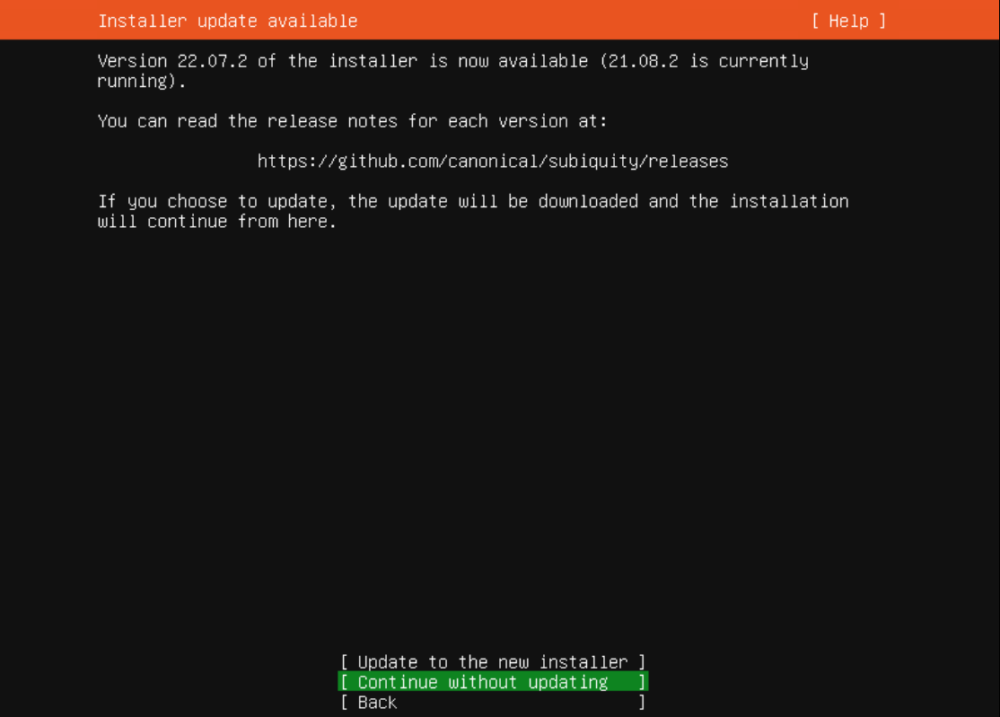Når maskinen spør om å konfigurere storage layout, går man bare videre.
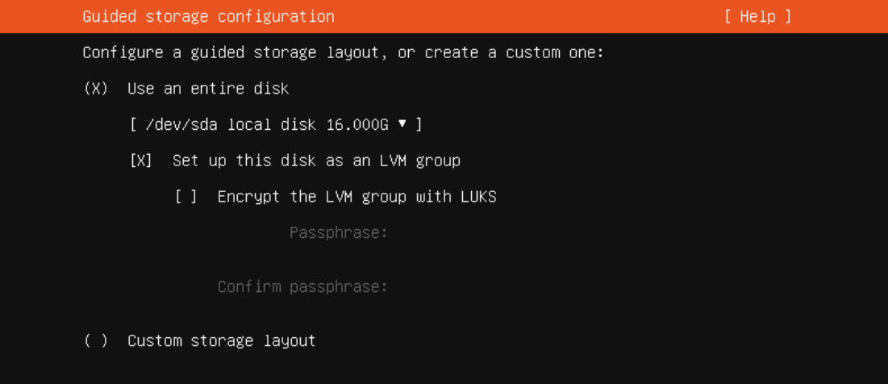Ved å gå videre etter storage layout vil maskinen spørre om å bekrefte en "destructive action". Hvis man har fulgt alle stegene så langt så vil ikke dette være noe problem, men det kan være lurt å dobbeltskjekke at man har satt opp alt som det skal.
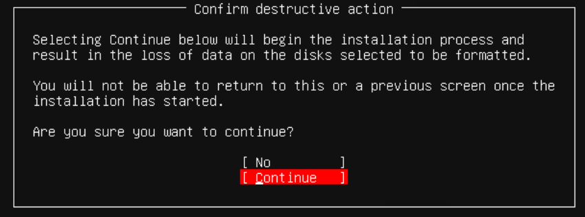Neste steg er å opprette en bruker på webserveren. Her skriver man inn navn, navn på webserveren, brukernavn og passord. Her kan man skrive inn hva man vil i de forskjellige feltene, bare pass på at du husker det du skriver inn som brukernavn og passord, ettersom de vil bli brukt til å bekrefte visse handlinger senere.
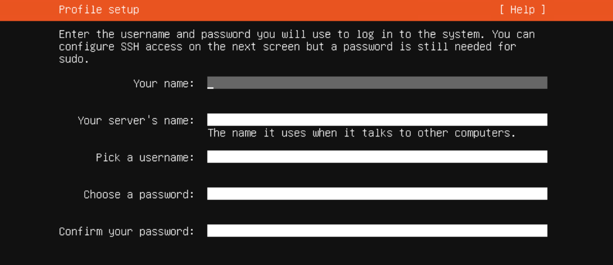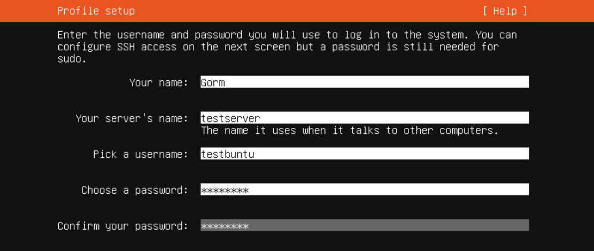Så vil maskinen spørre om du vil bruke SSH. Sammenlignet med mange av de andre stegene som vi hoppet over tidligere, så er SSH noe vi skal ha. Huk av på "Install OpenSSH server", og gå videre.
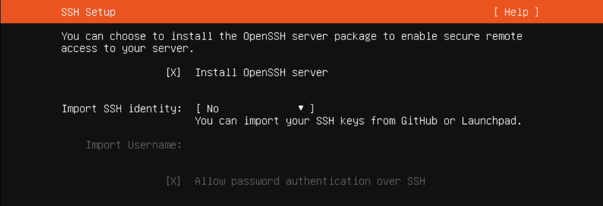Etter dette vil man få en meny fylt med mange forskjellige verktøy til webservere. Vi skal ikke bruke noen av disse, så bare trykk "done" for å gå videre.
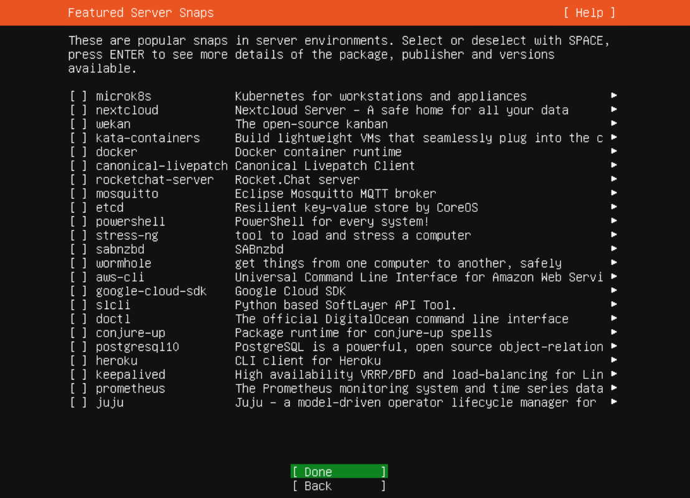Maskinen vil nå begynne å installere diverse systemer. Dette er det siste steget før maskinen er ferdig satt opp. Konsollen vil kjøre for fullt, og dette kan fort ta rundt 13 minutter. Når den er ferdig vil det komme en "reboot now" knapp nederst, som vil ferdigstille oppsettet av maskinen.
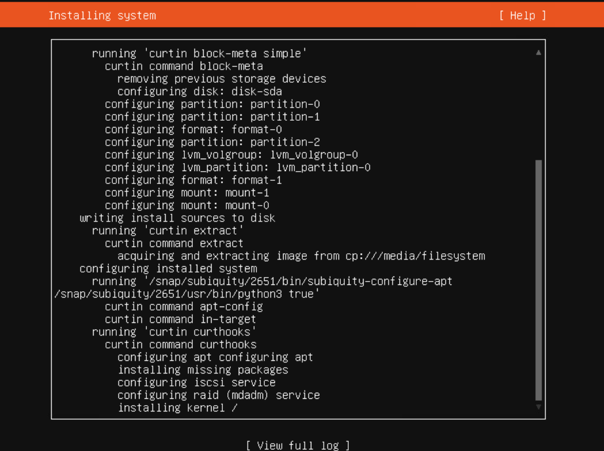Etter å ha startet på nytt vil man få dette vinduet, som snakker om å fjerne et såkalt "installation medium". Ettersom dette er en virtuell maskin og ikke en maskin som er satt opp gjennom en disk, kan vi bare ignorere dette og trykke enter.
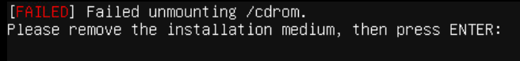Konsollen vil nå bli fylt med mange forskjellige kommandoer. Dette er maskinen som starter. Når den har startet helt, vil man bli spurt om å logge inn. På login skriver du inn brukernavnet og passordet du definerte tidligere. Vær obs på at det ikke vil være noen visuell indikasjon på at man skriver inn passorded, så her må man være sikker på at man skriver passordet riktig. Når man har skrevet inn alt trykker man enter.
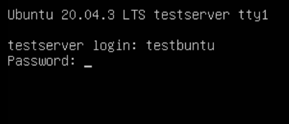Hvis du har skrevet inn riktig brukernavn og passord, vil du få denne skjermen. Gratulerer, du har nå satt opp en webserver!
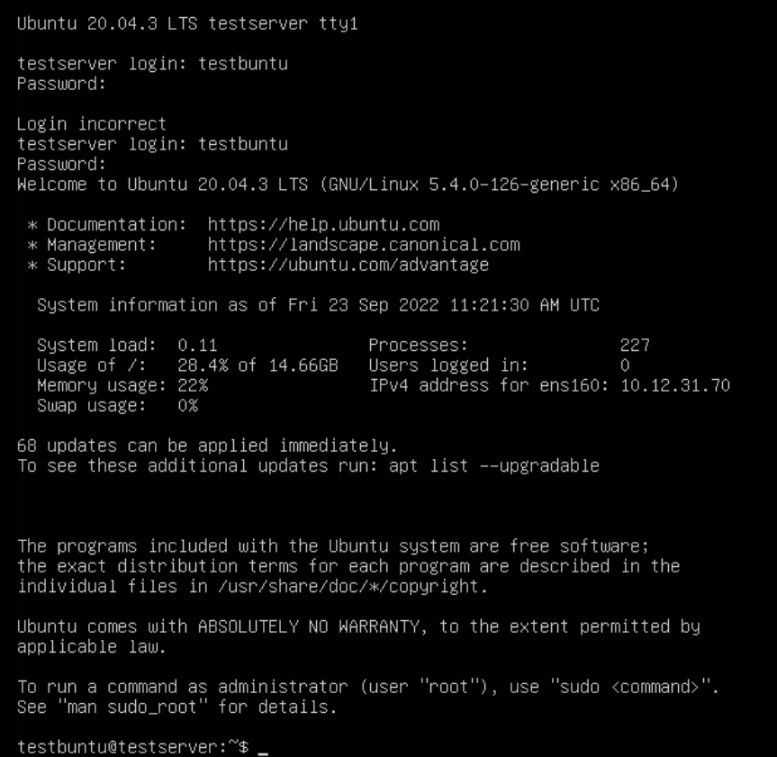Kapittel 3
Installere Apache
Først må vi oppdatere systemet for å få den nyeste versjonen av Apache 2. Skriv inn følgende:
$ sudo apt update
Vær obs på at hver gang en av kommandoene inneholder "sudo", må du skrive inn passordet ditt.
Så skal vi installere Apache. Skriv inn følgende kommando:
$ sudo apt install apache2
Systemet vil så spørre om du er sikker på om du vil installere Apache. Trykk på "y" for å gå videre.
Etter å ha ferdiginstallert Apache 2 kan man sjekke versjonen med:
$ apache2 -version
For at vi skal kunne nå Apache 2 utenifra må vi finne ut hvilke systemer vi må gi tilgang til brannmuren. Skriv inn følgende:
$ sudo ufw app list
Vi skal gi tilgang til det øverste punktet på listen som kommer opp, "Apache".
$ sudo ufw allow 'Apache'
Sjekk så at Apache har tilgang til brannmuren.
$ sudo ufw status
Neste steg er å sjekke om Apache fungerer. Skriv inn følgende:
$ sudo systemctl status apache2
Nå er det på tide å sette opp filsystemet for serveren, slik at vi kan legge inn vår egen nettside. I denne guiden kommer jeg til å opprette siden "testbuntu.net", men du må bytte ut "testbuntu.net" med ditt eget domenenavn.
Først må vi lage mappen som nettsiden skal lagres i ved å skrive inn følgende kommando:
$ sudo mkdir -p /var/www/testbuntu.net/html
(Bytt ut testbuntu.net med ditt eget domenenavn)
Så må vi endre plasseringen på mappen:
$ sudo chown -R $USER:$USER /var/www/testbuntu.net/html
Etter dette må vi gi mappen nødvendige tilganger:
$ sudo chmod -R 755 /var/www/testbuntu.net